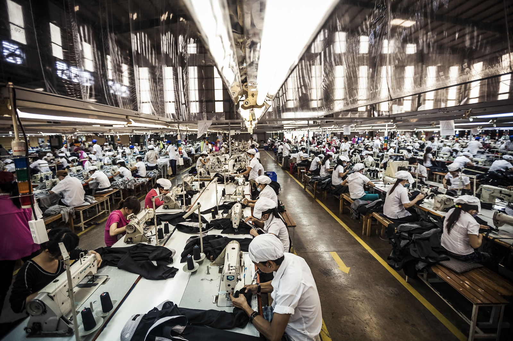

Fast Fashion
Un killer silenzioso
Essere sempre alla moda con abiti a basso costo, ma cosa si nasconde dietro la Fast Fashion?
Fast fashion è un termine usato dai rivenditori di moda per indicare la moda usa e getta. Questo tipo di collezioni di abbigliamento si basa sulle ultime tendenze presentate alla Settimana della moda.

Perché e’ inquinante la fast fashion?
Lavoratori sottopagati, assenza di norme di sicurezza, materiali scadenti e sistemi di lavorazione altamente inquinanti. Produrre e vendere a prezzi bassi invoglia i consumatori ad acquistare più impulsivamente e ciò si traduce in un guadagno per le aziende. Ma il risultato non e’ positivo, indossare vestiario a basso costo e che dura poco tempo, destinato ad essere buttato via e a finire negli inceneritori. Con conseguenze per l’ecosistema devastanti.
La Fast Fashion contribuisce in modo diretto all’ inquinamento ambientale causato dall’industria tessile, la seconda più inquinante al mondo, nonché tra le prime per consumo energetico e di risorse naturali. Le tendenze cambiano in maniera veloce e la fast fashion risponde a questa logica: capi sempre nuovi per assecondare la moda.
Dalle tinture dei tessuti, contenenti componenti altamente cancerogeni per l’uomo, alle materie prime utilizzate per la realizzazione degli indumenti, principalmente cotone e poliestere, materiale sintetico altamente tossico derivato dal petrolio, quindi non biodegrabile e non riciclabile. Queste sostanze tossiche nei tessuti entrano in contatto con il nostro corpo e vengono rilasciate dai vestiti ad ogni lavaggio, contaminando mari e oceani.
Tra i brand Fast Fashion più famosi ci sono H&M, Zara, Bershka, Primark, Benetton, un modello di moda che si è fatto strada già nella seconda metà del 1900. H&M esiste, infatti, dal 1947.
Come essere consapevoli nell’acquisto?
Il movimento Slow Fashion, al contrario, sensibilizza i consumatori su quali siano i loro reali bisogni, e cerca di insegnare come si può aumentare la longevità dei capi. Prima di acquistare qualunque tipo di prodotto, il consumatore dovrebbe chiedersi: mi serve davvero? dove è stato fatto e con quali materiali? quanto durerà nel tempo?